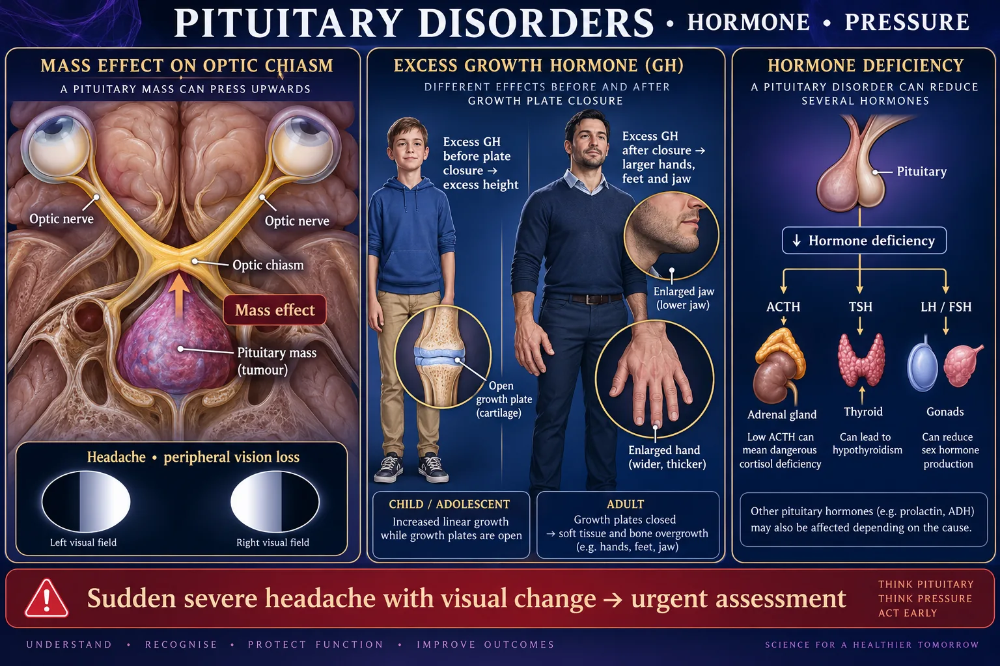

Pituitary Disorders 🧠
Hyperpituitarism · hypopituitarism · prolactinoma · hypophysectomy
The pituitary is a pea-sized gland in a bony pocket at the base of the skull, and almost everything that goes wrong with it is a tumor — a benign adenoma that either makes too much of one hormone or crushes the gland and makes too little of everything. Because of where it sits, the same tumor can also press on the optic chiasm. This page covers the anterior lobe; the posterior lobe's water disorders get their own pair of pages.
THE GLAND ITSELF
STEP 1 · ORIENTTwo lobes with different tissue, different blood supply and completely different diseases.

Portal blood controls the anterior lobe; axons connect the posterior lobe.
🔍 Open full-size illustration📖 Read the illustration as text
The anterior pituitary synthesizes TSH, ACTH, FSH, LH, GH and prolactin. ADH and oxytocin are made in hypothalamic neurons, transported along axons, and stored/released from posterior nerve terminals. The optic chiasm lies above the pituitary.
🔬 Anterior vs posterior — blood supply and what breaks
🧠 Made above; released below
- Hypothalamic neurons make ADH and oxytocin.
- Axons transport hormones down the stalk.
- Posterior pituitary stores and releases them into blood.
Stalk/posterior injury can disturb water balance. Anterior prolactin can rise after loss of inhibitory dopamine input.
📍 Why location causes half the symptoms
The pituitary sits in the sella turcica, a bony saddle. The only direction a growing tumor can easily expand is upward — straight into the optic chiasm.
So a pituitary adenoma produces two separate kinds of problem at once:
- Hormonal — from what it secretes, or from what it destroys.
- Mass effect — headache, visual field loss, and eventually hypopituitarism from pressure on healthy tissue.
👁️ Mass effect — bitemporal hemianopsia

A pituitary lesion can affect hormone output and nearby structures.
🔍 Open full-size illustration📖 Read the illustration as text
An expanding mass can affect the optic chiasm and peripheral vision. GH excess before growth-plate closure causes excessive linear growth; after closure, acromegaly affects hands, feet, face and soft tissues. ACTH deficiency may cause dangerous cortisol deficiency. ADH is made in the hypothalamus, although its release can be affected by pituitary/stalk disease.
Assessment: test visual fields by confrontation, ask about driving, bumping into things and missing peripheral objects, and document any change. In a post-op patient, new visual loss is an urgent finding.
HYPERPITUITARISM — TOO MUCH
STEP 2 · EXCESSIncreased secretion of hormone by the anterior pituitary, typically caused by a tumor.
🖼️ Shown in the picture: Pituitary disorders: hormones and pressure ↑
🚨 The pathophysiology in one line
Increased secretion of growth hormone by the anterior pituitary gland, typically caused by a tumor. Which disease you get depends entirely on whether the epiphyseal growth plates were still open.
- Gigantism — GH excess before puberty, plates still open → extreme height.
- Acromegaly — GH excess after puberty, plates fused → bones widen and thicken instead.
Puberty generally occurs somewhere around 8–14 years of age, so that is roughly the dividing line.
🔬 Gigantism · normal · GH deficiency, against a height scale
🦴 Growth plates change the result of GH excess
Open growth plates
- Excess GH before closure can produce excessive linear growth: gigantism.
Closed growth plates
- Excess GH after closure causes acromegaly: enlarged hands/feet and soft tissue or bone changes, without increased adult height.
Low GH in childhood
- May impair growth; diagnose with growth patterns and specialist evaluation, not appearance alone.
🔬 The growth plate is the whole explanation
🖼️ Shown in the picture: Growth plates change the result of GH excess ↑
🧠 HE’S TALL — the sign list for GH excess
🔬 What changes in the face and hands
🖼️ Shown in the picture: Pituitary disorders: hormones and pressure ↑
The clue that gets missed: because these changes take years, patients and families do not notice them. Ask to see an old photograph or driving license, and ask whether ring, hat, glove or shoe size has changed.
🚨 The complications that actually hurt people
- Cardiomyopathy and heart failure — the enlarged heart is the leading cause of death in untreated acromegaly.
- Hypertension.
- Glucose intolerance and diabetes — GH is an anti-insulin hormone.
- Obstructive sleep apnea from the thickened tongue and soft tissue of the airway.
- Difficult airway — anesthesia and intubation are harder; this belongs in your pre-op handover.
- Carpal tunnel syndrome from soft tissue swelling.
💊 Pharmacology for GH excess
- NSAIDs — for joint pain.
- Growth hormone receptor antagonists — they work by blocking GH at its receptor, so IGF-1 falls even though GH itself stays high.
- Dopamine agonists — work by stopping the release of GH (and of prolactin) from the tumor.
- Somatostatin analogs — synthetic versions of the body's own GH-inhibiting hormone; they switch GH release off at the source.
Drug therapy is usually an adjunct or a fallback. Surgery is first-line.
🥛 Prolactinoma — the commonest pituitary tumor
A benign adenoma secreting prolactin. Presentation splits by sex:
| Women | Men |
|---|---|
| Amenorrhea or irregular periods | Erectile dysfunction, low libido |
| Galactorrhea — milk when not breastfeeding | Loss of body hair, gynaecomastia |
| Infertility, low bone density | Infertility, low bone density |
| Usually found early (periods stop) | Often found late — bigger tumor, more mass effect |
Treatment is medical first, not surgical: dopamine agonists shrink most prolactinomas, because dopamine is prolactin's natural brake.
📋 The other secreting adenomas
- ACTH-secreting → Cushing disease (cortisol excess coming from the pituitary — different from Cushing syndrome, which is cortisol excess from any cause). See NG-280.
- TSH-secreting → hyperthyroidism with a TSH that is high or normal instead of suppressed — a rare but memorable pattern.
- Non-functioning → no hormone at all; presents purely with headache, visual loss and hypopituitarism.
HYPOPITUITARISM — TOO LITTLE
STEP 3 · DEFICIENCYDecreased secretion or production of hormones within the pituitary — from a tumor, trauma, stroke, surgery or radiation.
🔬 One gland fails, every gland below it fails
📉 Which pituitary signal is missing?
ACTH → cortisol
- Deficiency can cause life-threatening adrenal insufficiency. Assess/treat cortisol deficiency before thyroid replacement when both are suspected.
TSH → thyroid
- Low free T4 with an inappropriate TSH requires evaluation for central hypothyroidism.
LH / FSH → gonads
- Menstrual, fertility or sexual-function changes may occur.
GH / prolactin
- Effects depend on age and context; poor lactation may be a clue after severe postpartum hemorrhage.
📉 The sign list — "HYPO = think LOW"
- Hypotension — low blood pressure.
- Low cardiac output.
- Low height (in a child) and low energy.
- Low sex drive and infertility.
- Obesity — from a low metabolic rate.
- Headaches — usually the mass that caused it.
🚨 The order in which hormones are lost
When a mass slowly compresses the anterior lobe, the hormones tend to fail in a fairly predictable order — GH and the gonadotropins first, then TSH, then ACTH.
That matters clinically because ACTH is the one that kills. A patient can live for years with low GH; a patient with no cortisol who gets an infection can be in adrenal crisis within hours.
🚨 Sheehan syndrome — the obstetric cause
The pituitary roughly doubles in size during pregnancy but its blood supply does not. A severe postpartum hemorrhage can infarct it.
The classic first clue is that the mother cannot breastfeed (no prolactin), followed by failure of menses to return, fatigue, cold intolerance and hypotension.
💊 Replacement therapy — you replace the TARGET hormone
- Corticosteroids to replace steroid hormones — the drug names end in “-sone”: prednisone, hydrocortisone.
- Levothyroxine to replace thyroid hormone.
- Growth hormone replacement — essential in children, and used in some adults.
- Sex hormone replacement — estrogen/progesterone or testosterone, per the prescriber.
- Desmopressin if the posterior lobe is also involved — a synthetic ADH analog, not a blood-pressure drug.
Steroid replacement is given BEFORE thyroid replacement. Starting levothyroxine first speeds up metabolism and can burn through what little cortisol remains, precipitating an adrenal crisis.
✅ Teaching a patient on lifelong replacement
- Never stop the steroid abruptly or skip doses. This is lifelong replacement, not a course to taper off — the dose changes only on the prescriber’s plan.
- Sick-day rules: illness, fever, vomiting or surgery may require a higher steroid dose — the patient must know to call, not guess.
- Wear medical alert identification and carry a card listing the replacements.
- Report dizziness on standing, persistent vomiting, weakness or confusion — these are early crisis signs.
- Take levothyroxine on an empty stomach, at the same time daily, separated from calcium and iron.
SURGERY & POST-OP CARE
STEP 4 · THE NURSINGHypophysectomy is first-line treatment — and the post-op care is where the exam questions live.
🔬 Transsphenoidal hypophysectomy — the route and the risks
🏥 After transsphenoidal pituitary surgery
- Monitor neurologic status and vision.
- Track urine output, fluid balance and serial sodium for DI or delayed SIADH.
- Report clear watery nasal drainage, a salty taste, severe headache or fever promptly.
- Follow the surgeon’s restrictions on nose blowing, straining and nasal devices.
A “halo” on gauze or a glucose strip does not reliably confirm a CSF leak. Laboratory testing such as beta-2 transferrin may be ordered. Adrenal insufficiency must also be considered.
🚨 Post-operative complications
- Increased intracranial pressure — the priority assessment. Falling level of consciousness is the earliest reliable sign.
- Meningitis — infection reaching the brain through the surgical tract.
- Hypopituitarism — the healthy gland may be lost along with the tumor.
- CSF leakage — clear drainage from the nose that will not stop.
- Diabetes insipidus — sudden huge urine output, indicating pituitary or stalk damage.
✅ Post-op nursing interventions
- Monitor ICP, vital signs and neuro status on the ordered schedule.
- Elevate the head of the bed — this decreases intracranial pressure and venous congestion.
- NO sneezing, coughing or blowing the nose — each one spikes the pressure across a fresh surgical seal. Teach the patient to open the mouth if a sneeze is unavoidable.
- Avoid straining — stool softeners are usually ordered; no bending at the waist; no heavy lifting.
- Monitor for diabetes insipidus — strict intake and output, urine specific gravity, daily weights. Sudden dilute polyuria means the ADH supply has failed.
- Mouth care without a toothbrush until the incision under the upper lip has healed — rinses and flossing instead.
- Expect and reinforce that numbness of the upper lip and gums, and loss of smell, are common and often temporary.
🩸 Recognizing a CSF leak
🖼️ Shown in the picture: After transsphenoidal pituitary surgery ↑
The other clue: a patient who keeps swallowing, or who reports a persistent postnasal drip that tastes salty or sweet, after this surgery is describing CSF — not congestion.
⭐ The post-op urine question
The single most tested post-hypophysectomy complication is diabetes insipidus, because the surgery sits right where ADH is delivered.
- What you see: urine output that suddenly becomes enormous and pale, watery and dilute, with a low specific gravity, plus intense thirst.
- What you do: measure hourly output, check specific gravity, weigh daily, watch sodium, and notify the surgeon.
- What it is treated with: fluid replacement and desmopressin — a synthetic ADH analog.
🆕 Newer guidance — side notes (your textbook answer stays the exam answer)
- A halo ring on the dressing and a glucose-positive strip are not reliable proof of CSF: blood, tears and nasal mucus can give false results either way. Labs may test the fluid for beta-2 transferrin. Report clear drainage or a salty taste at once either way — the bedside test does not change that.
- GH and the gonadotropins often fail first when a tumor slowly compresses the gland, but there is no guaranteed order — cortisol deficiency is assessed early, not assumed to be last.
From Codex’s 7 Oct review, sources checked that day. For tests and NCLEX-style questions, answer the way your textbook teaches.
QUICK RECALL
SAY IT OUT LOUD⚠️ Six traps from this page
- Desmopressin is a synthetic ADH analog, not a vasopressor. It is given to conserve water. Watch for a falling sodium and fluid overload, not for blood pressure effects.
- Acromegaly does not make adults taller. The plates are already closed.
- The biggest killer in acromegaly is the heart, not the appearance.
- Prolactinoma is treated with drugs first — dopamine agonists — not surgery.
- Cushing disease is pituitary; Cushing syndrome is any cause. The words are not interchangeable.
- Do not brush the teeth after a transsphenoidal approach until the surgeon clears it — the incision is under the upper lip.
🔗 Related pages
- NG-278 · Hall of Fame I — the anterior pituitary's six hormones and negative feedback.
- NG-279 · Hall of Fame II — ADH and oxytocin from the posterior lobe.
- NG-280 · Hall of Fame III — cortisol, Cushing and Addison.
- NG-282 · SIADH vs DI (1) · NG-283 (2) — the posterior lobe water disorders.